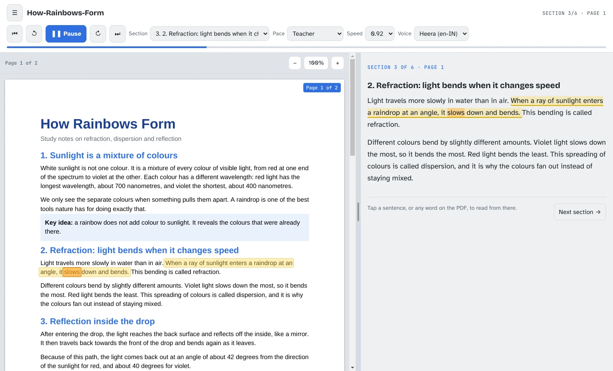

Free for Windows and macOS
Any PDF, read aloud like a teacher.
Open your notes, a textbook chapter or a research paper. PDF Lecture Reader reads it out with natural pauses, highlights every word on the page as it speaks, and starts from any word you click.
Free. No account. No ads. Your PDFs never leave your computer.
- Open PDF-Lecture-Reader-Setup-1.0.0.exe from your Downloads.
- If Windows says "Windows protected your PC", click More info, then Run anyway.
- Accept the license agreement and follow the steps.
- Open PDF-Lecture-Reader-1.0.0-mac.dmg from your Downloads and drag PDF Lecture Reader onto Applications.
- Open it from Applications. When macOS says it can't check the app, click Done.
- Open System Settings → Privacy & Security, scroll down and click Open Anyway. You only do this once.

The same app on Windows and Mac. Yellow is the sentence being read; orange is the word being spoken.
Made for studying, not just listening
Most text-to-speech reads a page like a robot reading a receipt. PDF Lecture Reader paces itself the way a good teacher does, and keeps your eyes on the page.
Teacher-style pauses
A short pause after each sentence, a longer one between paragraphs, and a proper break before every new section. Labels like "Key idea:" get their own beat.
Word-by-word highlighting
The sentence being read lights up on the real PDF page, and the word being spoken is marked as the voice says it. The page scrolls along on its own.
Click any word to jump
Click a word on the PDF, or a sentence in the transcript, and reading carries on from exactly there. No hunting for a seek bar.
Sections from your headings
Chapters and headings become a section list, so you can go straight to "3.2 Gradient descent" and back again.
Reads like a person would
Skips page numbers, headers and contents-page dots. Says → as "to", × as "times", and reads 29/10/2026 as "29 October 2026".
Private and offline
Everything happens on your computer. No sign-in, no uploads, no tracking. It remembers where you stopped in each document.
Pick the pace that suits the material
Speed changes how fast the voice talks. Pace changes how long it waits between ideas. Use Slow and clear when you are taking notes.
Up and reading in a minute
Three steps on either system.
Windows
Download
Click Download for Windows. The installer is about 78 MB.
Install
Open it from your Downloads. If Windows says "Windows protected your PC", click More info, then Run anyway. Accept the license and click Install.
Open a PDF and press Play
Choose a PDF or drag one in. You can also right-click any PDF in File Explorer and pick Read aloud with PDF Lecture Reader.
macOS
Download
Click Download for Mac. The disk image is about 173 MB and works on Apple Silicon and Intel Macs.
Install
Open it and drag PDF Lecture Reader onto Applications. The first time you open it, click Done, then System Settings → Privacy & Security → Open Anyway.
Open a PDF and press Play
Choose a PDF or drag one in. You can also right-click any PDF in Finder and pick Open With → PDF Lecture Reader.
Details
| Item | Windows | macOS |
|---|---|---|
| Version | 1.0.0 | 1.0.0 |
| Released | 29/10/2026 | 30/10/2026 |
| Download | 78 MB installer (.exe) | 173 MB disk image (.dmg) |
| Needs | Windows 10 or 11, 64-bit, about 300 MB free space | macOS 11 Big Sur or newer, Apple Silicon or Intel, about 450 MB free space |
| PDFs open from | Right-click in File Explorer, or drag onto the window | Open With in Finder, or drop on the Dock icon |
| SHA-256 | Loading… | Loading… |
- Works with
- PDFs with selectable text. Scans can be viewed but not read aloud.
- Price
- Free for personal, study and work use
- What's new
- First release.
Questions
Windows says "Windows protected your PC". Is it safe?
That message appears for apps that are not yet signed with a paid code-signing certificate. Click More info, then Run anyway.
Only do this for an installer you downloaded from this website. To check your copy is the original, compare its SHA-256 (in the Details section above) with the one Windows shows when you run certutil -hashfile PDF-Lecture-Reader-Setup-1.0.0.exe SHA256 in Command Prompt.
My Mac says the app "can't be opened" or "could not be verified".
macOS shows that for apps that are not yet signed with a paid Apple Developer ID. Click Done, then open System Settings → Privacy & Security, scroll down and click Open Anyway next to PDF Lecture Reader. After that it opens normally.
Only do this for a copy you downloaded from this website. To check it is the original, run shasum -a 256 ~/Downloads/PDF-Lecture-Reader-1.0.0-mac.dmg in Terminal and compare it with the SHA-256 in the Details section above.
Is it really free?
Yes. There is no trial, no account and no ads. The license agreement covers personal, study and work use.
Are my PDFs uploaded anywhere?
No. Documents are opened, read and spoken entirely on your computer. The app works with the internet switched off. It keeps copies of up to 8 recent PDFs in your user account so it can reopen them where you stopped, and you can remove any of them from the start screen.
Which voice does it use? Can I get an Indian English voice?
It uses the voices installed on your computer.
Windows: open Settings → Time & language → Speech → Add voices and choose English (India).
Mac: open System Settings → Accessibility → Spoken Content → System voice → Manage Voices and download an English (India) or "Enhanced" voice.
Restart the app and pick it from the Voice list.
My PDF says it has no selectable text.
The PDF is a scan, a picture of text. Make a text-searchable copy with an OCR tool (many scanner apps can export one), then open that copy.
How do I uninstall it?
Windows: Settings → Apps → Installed apps → PDF Lecture Reader → Uninstall. Your own PDF files are never touched. The uninstaller also offers to delete the app's saved settings and recent documents.
Mac: drag PDF Lecture Reader from Applications to the Bin. To remove its settings and recent documents too, delete the PDF Lecture Reader folder in ~/Library/Application Support.
Turn your next chapter into a lecture
Free. No account. No ads.